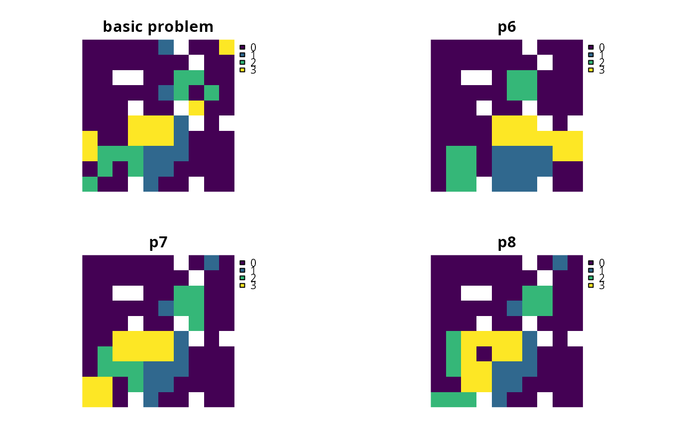
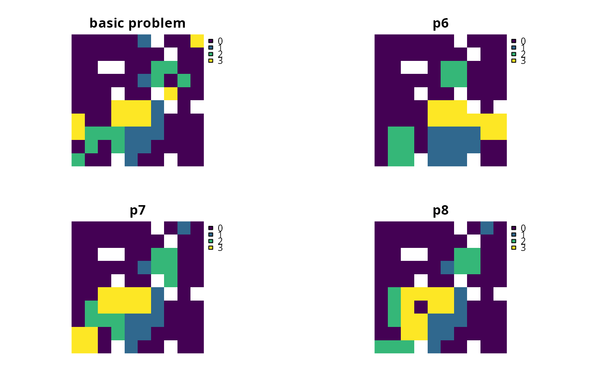

Add constraints to a conservation planning problem to ensure that all selected planning units in the solution have at least a certain number of neighbors that are also selected in the solution.
Usage
# S4 method for ConservationProblem,ANY,ANY,ANY,ANY
add_neighbor_constraints(x, k, clamp, zones, data)
# S4 method for ConservationProblem,ANY,ANY,ANY,data.frame
add_neighbor_constraints(x, k, clamp, zones, data)
# S4 method for ConservationProblem,ANY,ANY,ANY,matrix
add_neighbor_constraints(x, k, clamp, zones, data)
# S4 method for ConservationProblem,ANY,ANY,ANY,array
add_neighbor_constraints(x, k, clamp, zones, data)Arguments
- x
problem()object.- k
integerminimum number of neighbors for selected planning units in the solution. For problems with multiple zones, the argument tokmust have an element for each zone.- clamp
logicalshould the minimum number of neighbors for selected planning units in the solution be clamped to feasibility? For example, if a planning unit has two neighbors,k = 3, andclamp = FALSE, then the planning unit could not ever be selected in the solution. However, ifclamp = TRUE, then the planning unit could potentially be selected in the solution if both of its two neighbors were also selected. Defaults toTRUE.- zones
matrixorMatrixobject describing the neighborhood scheme for different zones. Each row and column corresponds to a different zone in the argument tox, and cell values must contain binarynumericvalues (i.e., one or zero) that indicate if neighboring planning units (as specified in the argument todata) should be considered neighbors if they are allocated to different zones. The cell values along the diagonal of the matrix indicate if planning units that are allocated to the same zone should be considered neighbors or not. The default argument tozonesis an identity matrix (i.e., a matrix with ones along the matrix diagonal and zeros elsewhere), so that planning units are only considered neighbors if they are both allocated to the same zone.- data
NULL,matrix,Matrix,data.frame, orarrayobject showing which planning units are neighbors with each other. The argument defaults toNULLwhich means that the neighborhood data is calculated automatically using theadjacency_matrix()function. See the Data format section for more information.
Value
An updated problem() object with the constraints added to it.
Details
This function uses neighborhood data to identify solutions that surround planning units with a minimum number of neighbors. It was inspired by the mathematical formulations detailed in Billionnet (2013) and Beyer et al. (2016).
Data format
The argument to data can be specified using the following formats:
dataas aNULLvalueneighborhood data should be calculated automatically using the
adjacency_matrix()function. This is the default argument. Note that the neighborhood data must be manually defined using one of the other formats below when the planning unit data in the argument toxis not spatially referenced (e.g., indata.frameornumericformat).dataas amatrix/Matrixobjectwhere rows and columns represent different planning units and the value of each cell indicates if the two planning units are neighbors or not. Cell values should be binary
numericvalues (i.e., one or zero). Cells that occur along the matrix diagonal have no effect on the solution at all because each planning unit cannot be a neighbor with itself.dataas adata.frameobjectcontaining columns that are named
"id1","id2", and"boundary". Here, each row denotes the connectivity between two planning units following the Marxan format. The"boundary"column should contain binarynumericvalues that indicate if the two planning units specified in the"id1"and"id2"columns are neighbors or not. This data can be used to describe symmetric or asymmetric relationships between planning units. By default, input data is assumed to be symmetric unless asymmetric data is also included (e.g., if data is present for planning units 2 and 3, then the same amount of connectivity is expected for planning units 3 and 2, unless connectivity data is also provided for planning units 3 and 2). If the argument toxcontains multiple zones, then the"zone1"and"zone2"columns can optionally be provided to manually specify if the neighborhood data pertain to specific zones. The"zone1"and"zone2"columns should contain thecharacternames of the zones. If the columns"zone1"and"zone2"are present, then the argument tozonesmust beNULL.dataas anarrayobjectcontaining four-dimensions where binary
numericvalues indicate if planning unit should be treated as being neighbors with every other planning unit when they are allocated to every combination of management zone. The first two dimensions (i.e., rows and columns) correspond to the planning units, and second two dimensions correspond to the management zones. For example, if the argument todatahad a value of 1 at the indexdata[1, 2, 3, 4]this would indicate that planning unit 1 and planning unit 2 should be treated as neighbors when they are allocated to zones 3 and 4 respectively.
References
Beyer HL, Dujardin Y, Watts ME, and Possingham HP (2016) Solving conservation planning problems with integer linear programming. Ecological Modelling, 228: 14--22.
Billionnet A (2013) Mathematical optimization ideas for biodiversity conservation. European Journal of Operational Research, 231: 514--534.
Examples
# \dontrun{
# load data
sim_pu_raster <- get_sim_pu_raster()
sim_features <- get_sim_features()
sim_zones_pu_raster <- get_sim_zones_pu_raster()
sim_zones_features <- get_sim_zones_features()
# create minimal problem
p1 <-
problem(sim_pu_raster, sim_features) %>%
add_min_set_objective() %>%
add_relative_targets(0.1) %>%
add_default_solver(verbose = FALSE)
# create problem with constraints that require 1 neighbor
# and neighbors are defined using a rook-style neighborhood
p2 <- p1 %>% add_neighbor_constraints(1)
# create problem with constraints that require 2 neighbor
# and neighbors are defined using a rook-style neighborhood
p3 <- p1 %>% add_neighbor_constraints(2)
# create problem with constraints that require 3 neighbor
# and neighbors are defined using a queen-style neighborhood
p4 <-
p1 %>%
add_neighbor_constraints(
3, data = adjacency_matrix(sim_pu_raster, directions = 8)
)
# solve problems
s1 <- terra::rast(list(solve(p1), solve(p2), solve(p3), solve(p4)))
names(s1) <- c("basic solution", "1 neighbor", "2 neighbors", "3 neighbors")
# plot solutions
plot(s1, axes = FALSE)
 # create minimal problem with multiple zones
p5 <-
problem(sim_zones_pu_raster, sim_zones_features) %>%
add_min_set_objective() %>%
add_relative_targets(matrix(0.1, ncol = 3, nrow = 5)) %>%
add_default_solver(verbose = FALSE)
# create problem where selected planning units require at least 2 neighbors
# for each zone and planning units are only considered neighbors if they
# are allocated to the same zone
z6 <- diag(3)
print(z6)
#> [,1] [,2] [,3]
#> [1,] 1 0 0
#> [2,] 0 1 0
#> [3,] 0 0 1
p6 <- p5 %>% add_neighbor_constraints(rep(2, 3), zones = z6)
# create problem where the planning units in zone 1 don't explicitly require
# any neighbors, planning units in zone 2 require at least 1 neighbors, and
# planning units in zone 3 require at least 2 neighbors. As before, planning
# units are still only considered neighbors if they are allocated to the
# same zone
p7 <- p5 %>% add_neighbor_constraints(c(0, 1, 2), zones = z6)
# create problem given the same constraints as outlined above, except
# that when determining which selected planning units are neighbors,
# planning units that are allocated to zone 1 and zone 2 can also treated
# as being neighbors with each other
z8 <- diag(3)
z8[1, 2] <- 1
z8[2, 1] <- 1
print(z8)
#> [,1] [,2] [,3]
#> [1,] 1 1 0
#> [2,] 1 1 0
#> [3,] 0 0 1
p8 <- p5 %>% add_neighbor_constraints(c(0, 1, 2), zones = z8)
# solve problems
s2 <- list(p5, p6, p7, p8)
s2 <- lapply(s2, solve)
s2 <- lapply(s2, category_layer)
s2 <- terra::rast(s2)
names(s2) <- c("basic problem", "p6", "p7", "p8")
# plot solutions
plot(s2, main = names(s2), axes = FALSE)

# }
# create minimal problem with multiple zones
p5 <-
problem(sim_zones_pu_raster, sim_zones_features) %>%
add_min_set_objective() %>%
add_relative_targets(matrix(0.1, ncol = 3, nrow = 5)) %>%
add_default_solver(verbose = FALSE)
# create problem where selected planning units require at least 2 neighbors
# for each zone and planning units are only considered neighbors if they
# are allocated to the same zone
z6 <- diag(3)
print(z6)
#> [,1] [,2] [,3]
#> [1,] 1 0 0
#> [2,] 0 1 0
#> [3,] 0 0 1
p6 <- p5 %>% add_neighbor_constraints(rep(2, 3), zones = z6)
# create problem where the planning units in zone 1 don't explicitly require
# any neighbors, planning units in zone 2 require at least 1 neighbors, and
# planning units in zone 3 require at least 2 neighbors. As before, planning
# units are still only considered neighbors if they are allocated to the
# same zone
p7 <- p5 %>% add_neighbor_constraints(c(0, 1, 2), zones = z6)
# create problem given the same constraints as outlined above, except
# that when determining which selected planning units are neighbors,
# planning units that are allocated to zone 1 and zone 2 can also treated
# as being neighbors with each other
z8 <- diag(3)
z8[1, 2] <- 1
z8[2, 1] <- 1
print(z8)
#> [,1] [,2] [,3]
#> [1,] 1 1 0
#> [2,] 1 1 0
#> [3,] 0 0 1
p8 <- p5 %>% add_neighbor_constraints(c(0, 1, 2), zones = z8)
# solve problems
s2 <- list(p5, p6, p7, p8)
s2 <- lapply(s2, solve)
s2 <- lapply(s2, category_layer)
s2 <- terra::rast(s2)
names(s2) <- c("basic problem", "p6", "p7", "p8")
# plot solutions
plot(s2, main = names(s2), axes = FALSE)

# }